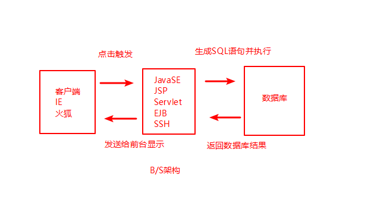

SQL Server
什么是数据库
可以对数据进行存储和管理的软件以及数据本身 统称为数据库。
数据库由表、关系、操作组
为什么需要数据库
几乎所有的应用软件的后台都需要数据库
数据库存储数据占用空间小容易持久保存
存储比较安全
容易维护和升级
数据库移植比较容易
简化对数据的操作
B/S架构里面包含数据库

数据结构和数据库区别
数据库是在应用软件级别研究数据的存储和操作
数据结构是在系统软件级别研究数据的存储和操作
附加和分离数据库
附加：添加数据库
分离：分离出数据库以便移植，分离前需断开连接
约束
定义：对一个表中属性操作的限制
分类：主键约束 -- 不允许重复元素，避免数据的冗余
外键约束 -- 通过外键约束从语法上保证了本事物所关联的其他事物一定是存在的
check约束 -- 保证事物属性的取值在合法范围之内
default约束 -- 保证事物属性一定会有一个值
唯一约束 -- 保证了事物属性的取值不允许重复，但允许其中有一列为null且只能有一个null
问题：unique键是否允许多列为空？
KEY：SqlServer2005只允许一个unique列为空
Oracle11G允许多个unique列为空
not null 要求用户必须为该属性赋值，否则语法出错。默认允许null。
数据库是通过表来解决事物的存储问题的
数据库是通过约束来解决事物取值的有效性和合法性问题
建表的过程就是指定事物属性及其事物属性各种约束的过程
关系
表与表之间的联系
实现方式：通过设置不同形式的外键来体现表和表的不同关系
分类
一对一
既可以把表A的主键充当表B的外键
也可以把表B的主键充当表A的外键
一对多
把表A的主键充当表B的外键
或者讲：把A表的主键添加到B表来充当B表的外键
在多的一方添加外键
多对多
多对多必须得通过单独的一张表来表示
例如 id 班级和id 老师，然后根据它们的关系构成一张新表：id 班级（外键） 老师（外键） 其他附加项
主键
能够唯一标示一个事物的一个字段或者多个字段的组合，被称为主键
特点：
含主键的表叫做主键表
主键通常都是整数，不建议使用字符串当主键（如果主键用于集群式服务，才可以考虑用字符串当主键）
主键的值通常不允许修改，除非本记录被删除。
主键不要定义成id，而要定义成表名id或者表名_id
要用代理主键，不要用业务主键
任何一张表，强烈建议不要使用有业务含义的字段充当主键
我们通常都在表中单独添加一个整型的编号充当主键字段（代理主键）
主键是否连续增长不是十分重要
唯一键
业务含义的值例如邮箱不能当主键，是因为业务值可能被修改，易出风险也不易维护。但又要求唯一，这时候就可以把它定义为唯一键。--代理主键。
外键
定义：如果一个表中的若干字段是来自另外若干表的主键或唯一键，则这若干字段就是外键
注：
外键通常是来自另外表的主键而不是唯一键，因为唯一键可能为null
外键不一定是来自另外的表，也可能来自本表的主键
含有外键的表叫外键表，外键字段来自的那一张表叫主键表
问题：先删主键表还是外键表？
KEY:先删外键表。先删主键表会报错，这样会导致外键表中的数据引用失败。
查询
计算列
select * from emp；--从emp表中查询所有列信息，当数据量巨大时勿使用
select ename, sal from emp;
select ename, sal*12 as "年薪", job from emp;
--在oracle中字段的别名不允许用单引号括起来。但SQLServer可以，为了兼用性，
--字段最好用双引号括起来，不要用单引号。
distinct 【不允许重复的】

between 【在某个范围】


in 【属于若干个孤立的值】

top 【最前面若干条记录 专属于SQL Server语法 无法移植其他数据库】
若15%*记录数不是整数，往正方向取整，如2.1为3。

分页查询
假设每页显示n条记录，当前要显示的是第m页
表名是A 主键是A_id
分页查询语句
SELECT TOP n *
FROM A
WHERE A_id not in (SELECT TOP n*(m-1) A_id FROM A)
NULL 【没有值 空值】

order by 【以某个字段排序】

模糊查询 【搜索中常使用】


聚合函数 【多行记录返回一个值 通常用于统计分组的信息】


group by 【分组】

having 【对分组之后的信息进行过滤】
1 having子句是用来对分组之后的数据进行过滤，因此使用having先使用group by
2 没有使用group by但使用having 则意味着having把所有记录当做一组来进行过滤

3 having子句出现的字段必须是分组之后的组的整体信息，不允许出现组内的详细信息
4 having子句中不能出现字段的别名，只能使用字段最原始的名字
5 having和where的异同

连接查询
定义
将两个表或者两个以上的表以一定的连接条件连接起来，从中检索满足条件的数据
分类
内连接


内联接（inner join）
返回所有相匹配的行对。废弃两个表中不匹配的行。


外联接（out join left/right）


 完全联接（full join）
完全联接（full join）

交叉联接 （cross join）

自连接

联合


identity


事务


create database Test
use Test
create table bank
(
customerEname nvarchar(200),
currentMoney money
)
insert into bank values ('张三', 1000)
insert into bank values ('李四', 1)
alter table bank add constraint check_currentMoney check(currentMoney>=1)
update bank set currentMoney=currentMoney-1000 where customerEname='张三'
update bank set currentMoney=currentMoney+1000 where customerEname='李四'
begin transaction
declare @errorSum int
set @errorSum = 0
update bank set currentMoney=currentMoney-1000
where customerEname='张三'
set @errorSum = @errorSum + @@error
update bank set currentMoney=currentMoney+1000
where customerEname='李四'
set @errorSum = @errorSum + @@error
if (@errorSum <> 0)
begin
print '转账失败'
rollback transaction
end
else
begin
print '转账成功'
commit transaction
end